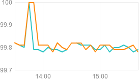

平台状态
接口响应时间
接口调用成功率
-
问答系统
微博开放平台问答系统, 是微博开放平台开发者彼此交流、互相分享的知识社区。
微博开放平台问答系统 -
知识讲堂
微博开放平台知识讲堂，是用于分享产品案例、新产品介绍、技术开发、以及运营技巧的平台，满足开发者多元化信息需求。
知识讲堂 -
商务合作
根据以往案例的成功经验推出了一系列标准化的解决方案，为网站运营方免费提供包括标准微博系统，选秀活动活动平台，客户服务平台等，同时我们也在不断的努力，持续优化我们的系统，推出更多的解决方案，满足大家的需求，也欢迎给我们提出宝贵的意见。
联系方式
-
联系方式
有关应用审核、网站合作等问题，请联系：
微博：http://e.weibo.com/1904178193
有关技术类的支持，请联系：
官方微博
-
#互联网行业那些事儿#【微软或停止开发Windows 10 Mobile 关闭手机部门】在智能手机市场，微软虽多次尝试，但至今仍无起色。消息称，微软或很快关闭Windows 10 Mobile OS和Windows Phone设备部门。在诺基亚相关交易上，微软投入上百亿美元。2015年的份额从2014年的3%降至1.7%。 http://t.cn/R5cJXui
-
#互联网行业那些事儿#【微软或停止开发Windows 10 Mobile 关闭手机部门】在智能手机市场，微软虽多次尝试，但至今仍无起色。消息称，微软或很快关闭Windows 10 Mobile OS和Windows Phone设备部门。在诺基亚相关交易上，微软投入上百亿美元。2015年的份额从2014年的3%降至1.7%。 http://t.cn/R5cJXui
-
#互联网行业那些事儿#【微软或停止开发Windows 10 Mobile 关闭手机部门】在智能手机市场，微软虽多次尝试，但至今仍无起色。消息称，微软或很快关闭Windows 10 Mobile OS和Windows Phone设备部门。在诺基亚相关交易上，微软投入上百亿美元。2015年的份额从2014年的3%降至1.7%。 http://t.cn/R5cJXui
-
#互联网行业那些事儿#【微软或停止开发Windows 10 Mobile 关闭手机部门】在智能手机市场，微软虽多次尝试，但至今仍无起色。消息称，微软或很快关闭Windows 10 Mobile OS和Windows Phone设备部门。在诺基亚相关交易上，微软投入上百亿美元。2015年的份额从2014年的3%降至1.7%。 http://t.cn/R5cJXui